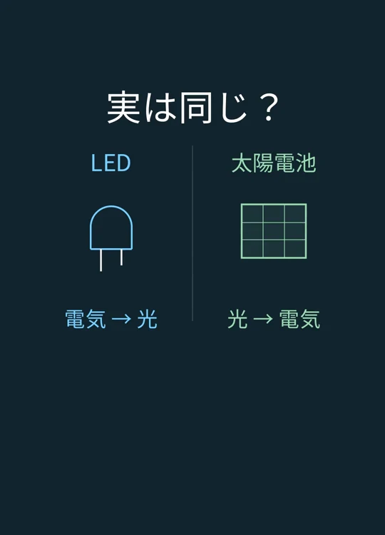
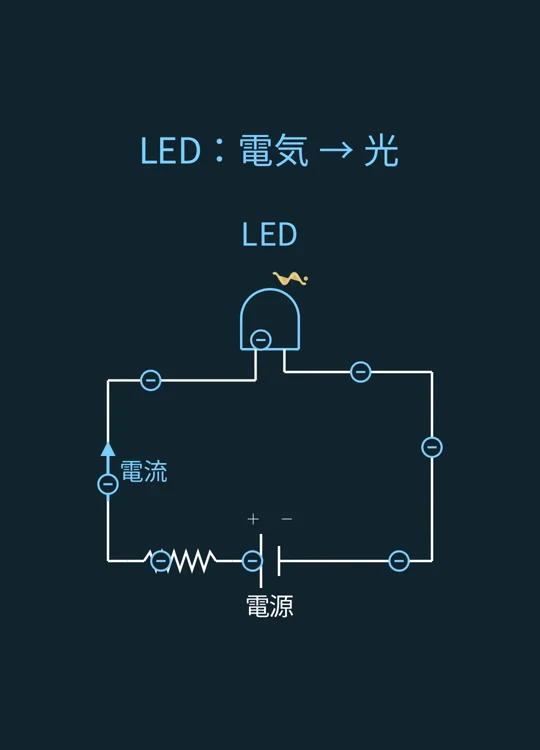
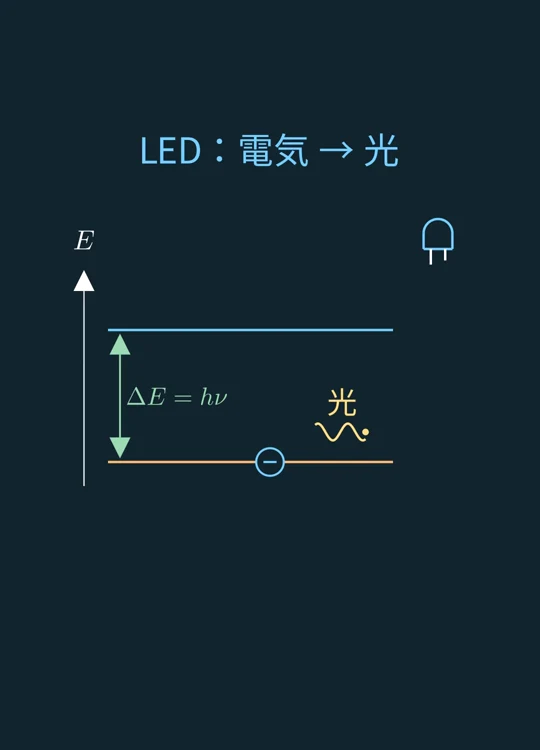
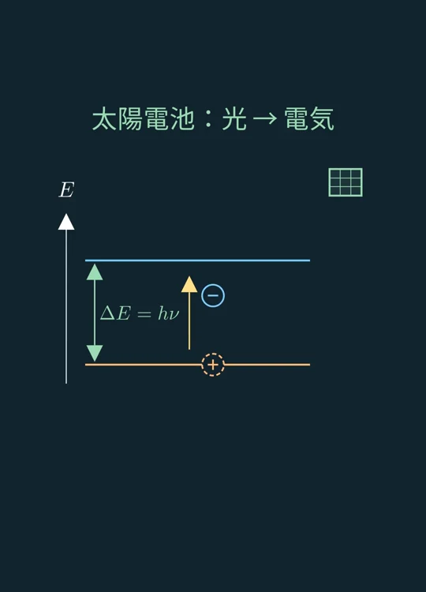
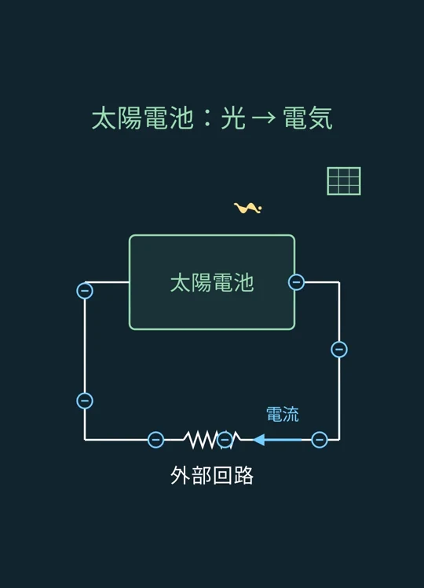
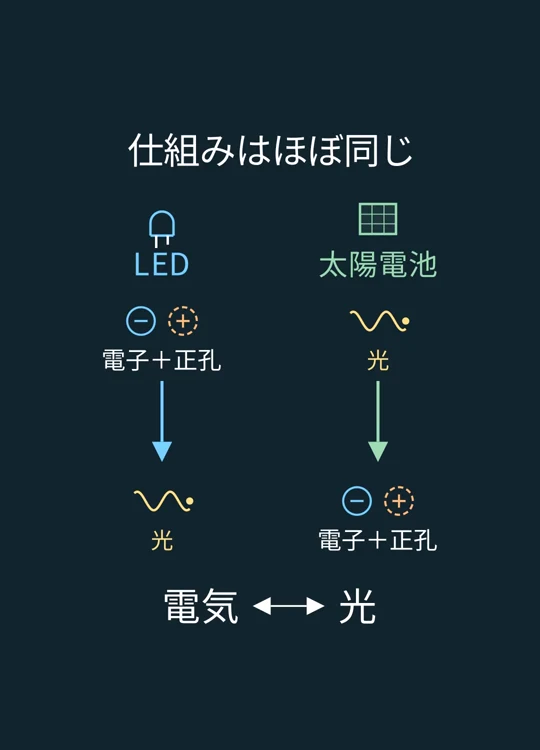

VIDEO 04 / LEDと太陽電池
LEDと太陽電池、実は同じ？
LEDは電気を光に、太陽電池は光を電気に。電子・正孔と光の共通したやり取りを、図から振り返る。
動画で見る

YouTube動画はアップロード準備中です。
画像で、ざっくり振り返る
動画の順番に沿って、ポイントをまとめた。
STEP 01
電気と光、変換の向きが反対
LEDは電気を光に、太陽電池は光を電気に変える。別々に見える二つの部品を、電子・正孔と光のやり取りから見比べる。

場面 1 · 画像を選ぶと拡大 STEP 02
まずはLEDの回路
電源から電気を流すとLEDが光る。次に、そのLEDの内部で何が起きているかを見ていく。

場面 2 · 画像を選ぶと拡大 STEP 03
電子が空席を埋めると、光が出る
電子が空席を埋めると、余ったエネルギーを光として放出する。この電子の空席が正孔。図の上下は位置ではなく、電子のエネルギーを表す。

場面 3 · 画像を選ぶと拡大 STEP 04
太陽電池では、光を受けて電子が移る
光を吸収すると、電子が高いエネルギーの状態へ移り、正孔が残る。LEDと同じ図を、ほぼ逆向きにたどる。

場面 4 · 画像を選ぶと拡大 STEP 05
電子と正孔を分け、電流を取り出す
太陽電池の中の電気の力で電子と正孔を引き離し、外部回路に電流を取り出す。光が入ることが、回路に電気を流す出発点になる。

場面 5 · 画像を選ぶと拡大 STEP 06
仕組みはほぼ同じ
LEDは電子と正孔から光へ、太陽電池は光から電子と正孔へ。半導体の中の共通したやり取りを、ほぼ逆方向に利用している。

場面 6 · 画像を選ぶと拡大